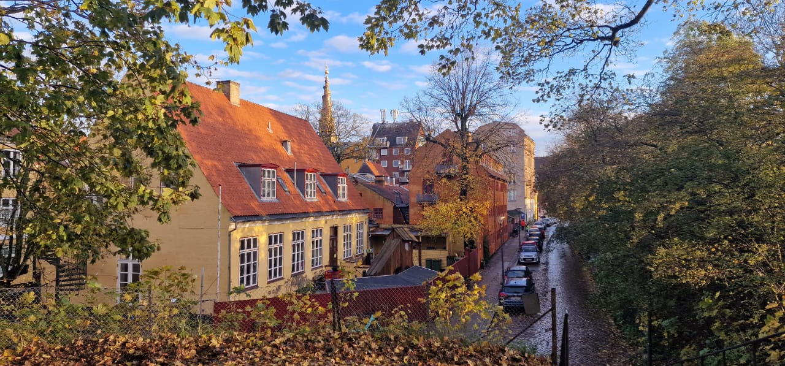

Welcome!
Thank you for accepting our invitation to contribute to the Transcultural Atelier – Maison du Regard.
This initiative brings together researchers, conservators, museum professionals, artists, and heritage specialists who share an interest in documenting and promoting the cultural heritage of different regions and traditions.
Your contribution will become part of a growing international archive designed to encourage scholarly dialogue, facilitate future collaborations, and make professional knowledge more accessible to the wider community.
We greatly appreciate the time and expertise you are willing to share. Every contribution, whether devoted to a single object, a collection, a tradition, or a broader cultural topic, helps build a richer understanding of our shared heritage.
Please complete the submission form using either English or French. We look forward to presenting your work through the Maison du Regard platform.
Thank you once again for supporting the Transcultural Atelier – Maison du Regard.
When you are ready, please proceed to the Heritage Expert Record Form.
Open the Expert Record Form
Bienvenue!
Merci d'avoir accepté notre invitation à contribuer au Transcultural Atelier – Maison du Regard.
Cette initiative réunit des chercheurs, restaurateurs, professionnels des musées, artistes et spécialistes du patrimoine partageant le souhait de documenter, d'étudier et de valoriser le patrimoine culturel sous toutes ses formes.
Votre contribution rejoindra une archive internationale en développement, destinée à favoriser les échanges scientifiques, encourager de nouvelles collaborations et rendre les connaissances spécialisées plus accessibles à un large public.
Nous vous remercions sincèrement pour le temps et l'expertise que vous souhaitez partager. Chaque contribution, qu'elle concerne un objet, une collection, une tradition ou un sujet patrimonial plus large, participe à une meilleure compréhension de notre patrimoine commun.
Nous vous invitons à compléter le formulaire en anglais ou en français. Nous serons heureux de présenter votre travail sur la plateforme Maison du Regard.
Merci encore de soutenir l’Atelier transculturel - Maison du Regard.
Lorsque vous êtes prêt, veuillez accéder au formulaire de fiche d’expertise.
Ouvrir le formulaire d'expertise